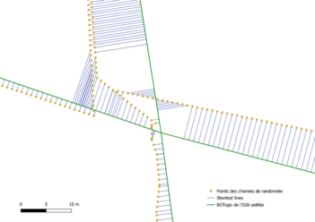

Cette page est consacrée aux principaux projets sur lesquels j'ai pu travailler, que ce soit lors de mes formations scolaires ou durant mes expériences professionnelles.
L'appariement automatique des itinéraires de randonnée sur la BDTopo de l'IGN
Stage au Département du Calvados
Principal projet sur lequel j'ai travaillé durant mon stage au sein du Pôle SIG du Département du Calvados. Pour le remettre dans son contexte, Calvados Attractivité, l'agence d'attractivité créée à l'initiative du Comité Départemental du Tourisme du Calvados, a effectué des relevés GPS sur le terrain afin d'obtenir le tracé des itinéraires de randonnées présents sur le territoire départemental, cela dans l'objectif final de les intégrer au portail cartographique Mapéo Calvados. Exemple d'une erreur de tracé obtenue avec le relevé GPS
Cependant, une fois le travail de collecte effectué, les données nécessitaient un post-traitement pour corriger la qualité géométrique des données qui étaient parfois mauvaises. En effet, les relevés GPS n'étaient pas précis et il arrivait parfois que le tracé obtenu s'éloigne de plusieurs mètres des coordonnées réelles de l'objet que l'on voulait cartographier.
Ainsi, l'objectif ici a été d'apparier les polylignes obtenues via relevé GPS sur le tracé de la BDTopo de l'IGN, qui est géométriquement plus précis. Ce travvail aurait pû être réalisé manuellement, mais cela aurait pris un temps considérable, la table contenant 749 objets. Il a donc été jugé plus efficace d'automatiser le traitement.
Les outils que j'ai utilisé pour réaliser ce projet onté été le logiciel QGIS 3.4, le système de gestion de base de données PostgreSQL et son extension PostGIS ainsi que l'application Open Jump.
Pour faire ce traitement, j'ai choisi de faire d'abord des essais sur une zone test : la commune de Valdallière.
Traitement automatique via PostGis
La difficulté ici était que QGIS ne disposait pas d'outils rapides afin de faire correspondre une entité vectorielle à une autre. L'idée a donc été de, dans un premier temps, convertir les polylignes des itinéraires de randonnées en points, de les repositionner sur les polylignes de la BDTopo puis de retransformer ces points en polylignes afin d'obtenir des itinéraires de randonnées au bon tracé.
Schéma représentant les différents géotraitements à réaliser
L'ensemble du traitement à été réaliser sous forme de requête SQL sous PostGis. Vous en trouverez quelques extraits ci dessous, le code complet étant disponible dans mon rapport de stage téléchargeable en bas de cet article.
Conversion des polylignes en multipoints
Densification des noeuds des itinéraires de randonnée et conversion des multipoints
CREATE TABLE theo.chemins_entretenus_valdalliere_multipoints AS
Création des shortest lines entre les points des itinéraires de randonnée et la couche unifiée de la BDTopo
Création des shortest lines
CREATE TABLE theo.shortestlines AS
SELECT ST_Shorestline(a.geom) as geom
FROM theo.chemins_entretenus_valdalliere_points a, theo.bdtopo_routes_valdalliere_union_b;
Création de points à la fin des shortest lines
Création des ended points à la fin des shortest lines
CREATE TABLE theo.shortest_endpoints AS
SELECT ST_Endpoint(a.geom) as geom
FROM theo.shortestlines_join as;
Résultat final
L'utilisation de la fonction ST_ShortestLine m'a donné un résultat satisfaisant avec un très faible pourcentage d'erreurs. La géométrie des itinéraires de randonnée est bien corrigée en dehors de quelques segments qui manquent parfois au résultat final.
Projet sur lequel j'ai travaillé avec le reste de ma classe tout au long de l'année durant ma licence professionnelle SIG-DAT à Caen. L'objectif ici était de dresser un diagnostic général de l'ensemble du territoire du Pays de Falaise, une intercommunalité de 58 communes située dans le Département du Calvados, c'est à dire observer, décrire et tenter d'expliquer les différents aspects qui la composent : services et équipements présents sur le territoire, mobilité, emplois ou encore situation socio-économique.
Ce fut donc un travail de fond et de durée réalisé avec 10 autres étudiants. Le travail à réaliser a été ordonné comme tel : recherche de données et documentation sur le pays de Falaise, définition des acteurs du territoire, classement et tri des informations recueillies, exploitation des données et rédaction, définition du plan, classement des données, recherches et développement selon le plan détaillé, harmonisation des différents travaux dans le but d’obtenir le rapport rédigé final.
Exploitation des données via des réalisations cartographiques
Carte de la densité de population dans le Calvados
Au cours de la formation Licence Professionnelle Système d’Information Géographique, Diagnostic et Aménagement du Territoire, un enseignement sur la sémiologie graphique a été donné. Nous nous en sommes inspirés afin de créer une cohérence graphique dans le visuel du rendu du diagnostic territorial du pays de Falaise mais également et surtout en ce qui concerne la création de cartes et de graphiques. « Sémiologie graphique, les diagrammes, les réseaux, les cartes » de J.Bertin a ainsi épaulé le groupe de travail pour donner cette harmonie. Une charte graphique a été créée en définissant l’échelle, les couleurs à utiliser pour faire ressortir les informations, la représentation de l’orientation, la typographie ...
Enquête sur le terrain
Nous avons aussi, au cours de l'année, réaliser plusieurs sorties de terrain afin de récupérer des documents au sein des maires des communes de l'intercommunalité, réaliser des micro-trottoirs auprès des habitants et faire des photos de terrain. Plus largement, nous avons aussi réaliser une grande enquête par questionnaire auprès des travailleuses du service à la personne (services d'aide et d'accompagnement, infirmières à domicile, aide à domicile et EPHAD) exercant sur le territoire du Pays de Falaise afin d'en savoir plus sur leur rapport à leur travail ainsi qu'à leur territoire.
Tout ceci a eu pour but de dresser les profils des interlocuteurs dans le but de comprendre qui sont les travailleurs ou futurs travailleurs du Pays de Falaise, pourquoi ont-ils choisi cette intercommunalité ?, et pourquoi cette profession ?. La réalisation de l’enquête s’est effectuée sur le logiciel « SPHINX » qui permet la rédaction, le traitement et l’analyse des enquêtes.
Extrait de l'analyse des questionnaires
Ce projet de diagnostic territorial a permis à tous de gérer et de s’approprier un projet concret avec une grande liberté d’action. De plus, le diagnostic territorial exigeant une vision globale de ce qui se passe dans un territoire, il a été indispensable de mettre à profit les différentes unités d’enseignements théoriques et techniques que la formation a pu apporter comme la connaissance des sociétés, la gestion de projet ou encore les différents types de méthodologie appliquée au SIG et la gestion de bases de données.
Cartographie et analyse de l'évolution du bâti dans les communes limitrophes de la forêt de Cerisy
Licence pro SIG-DAT
La forêt domaniale de Cerisy se situe à environ 40 km de Caen et occupe près de 2127 ha. En plus de
comporter le statut de forêt domaniale, et par la présence d’habitats d’intérêt communautaire et typique
au niveau européen, elle fait aussi l’objet d’un classement en zone Natura 2000. La présence du carabe doré
à reflets cuivrés (ou chrysocarabus
auronitens SSP cupreonitens)
classe également la forêt
domaniale de Cerisy comme
Réserve Naturelle Nationale.
Ce projet tutoré réalisé lors de la licence SIG-DAT avec 5 autres étudiants d'analyser l'évolution du bâti autour de cette forêt, et donc l'évolution de l'urbanisation des communes limitrophes à cette forêt entre 1947 et 2016.
Un travail de photo-interprétation
Evolution du bâti dans la commune de Balleroy-sur-Drôme
Pour cette analyse, nous avons réalisé un travail de photo-interprétation. C'est à dire que nous avons récupéré les photos aériennes de l'IGN réalisées au dessus des communes limitrophes à trois dates différentes (1947, 1979 et 2016), nous les avons étudié afin de repérer et numériser le bâti sous forme de donnée numérique.
De cette façon, nous avons pu connaitre, pour chaque commune, le bâti qui avait déjà été construit en 1947, celui construit entre 1947 et 1979, et celui entre 1979 et 2016 et ainsi voir l'évoltuion du bâti au fil du temps.
Bien sûr, il arrive parfois que le bâti ne survive pas toujours à l'épreuve du temps, nous avons aussi analysé pour chaque commune le pourcentage bâti qui a été détruit entre 1947 et 1979 puis entre 1979 et 2016.
Pour deux des communes, Bérigny et Balleroy, il a même été possible de récupérer le cadastre napoléonien de 1810, 1830 et 1866 et ainsi de procéder à la même analyse entre ces trois dates.
Analyse statistique
Une fois le travail de photo-interprétation effectué, nous avons pu faire une analyse statistique des résultats obtenus : superficie du bâti par date et taux d'évolution entre chacune d'elle.
Statistiques de l'évolution du bâti dans la commune de Balleroy-sur-Drôme
Au cours de la licence pro SIG-DAT, j'ai dû réalisé un travail d'étude sur un pays étranger à l'aide des outils SIG. J'ai donc choisi d'étudier la péninsule de Corée, et plus précisément la relation entre la Corée du Nord et la Corée du Sud et les enjeux géopolitiques et économiques qui entourent cette relation. Ce projet a été réalisé sous la forme d'une story map (story board narratif associant du texte à des images et des cartes).
Création d'une geodatabase
L'objectif de ce projet était de nous faire gérer une base de données géographiques sur ArcMap (géodatabase). Il a en effet fallu trouver par nous même un maximum de données sur le pays en question. Plusieurs sites m'ont été utiles pour cela : ArcGis Online; le site des données géographiques de la Nasa Earthdata.Nasa, Natural Earth ou encore Geofabrik. Une fois les données collectées, il a fallu les trier et les organiser dans la geodatabase.
Capture d'écran de la story map
Analyse géographique
Une fois la geodatabe créée, j'ai procédé à plusieurs géotraitements afin d'analyser la problématique, c'est à dire les enjeux économiques et géopolitiques de la relation inter-coréenne : pourcentage de la population sud-coréenne se trouvant dans la zone de tir de l'artillerie nord-coréenne, calcul d'un indice de modernité pour voir les disparités économiques entre la Corée du Nord et la Corée du Sud.
Etude préalable à l'implantation d'un parc éolien en Bourgogne
Licence de Géographie
Pour ce projet, réalisé en binôme avec un autre étudiant en deuxième année de licence de Géographie à l'Université de Besançon, nous devions réaliser une étude pour l'implantation potentielle d'un parc éolien au sein d'une région française et nous avons choisi la Bourgogne.
Prise en compte de l'ensemble des facteurs techniques et environnementaux
Carte de la vitesse moyenne du vent en Bourgogne
Pour mener à bien cette tâche, il a fallu identifier l'ensemble des aspects techniques qui peuvent intervenir lors de l'implantation d'un parc éolien sur un terrain (vitesse du vent, pentes, risque d'accidents de terrain ou encore la proximité avec un poste électrique) mais aussi les enjeux environnementaux (proximité avec les habitations, impact possible sur la biodiversité ainsi que sur les paysages).
Cartographie finale des terrains disponibles
Une fois l'ensemble des analyses réalisés, nous les avons toutes mises en commun afin d'obtenir la carte finale de l'ensemble des zones bourguigonnes pouvant potentiellement accueillir un parc éolien.
En deuxième année de licence de géographie à l'Université de Besançon, nous avons aussi dû réaliser un poster pour présenter un projet d'implantation d'un nouveau parc naturel sur le territoire français. Avec deux autres étudiants, nous avons choisi d'imaginer un projet de parc naturel dans la Haute Vallée de la Loue, dans le département du Doubs.
Présentation de la zone
Sur ce poster, il a fallu expliquer pourquoi cette zone avait vocation à devenir un parc naturel protégé. Nous avons donc tenté de montrer son intérêt d'un point de vue de la biodiversité, autant du point de vue de la faune, puisque la Haute Vallée de la Loue est un lieu d'habitat pour des espèces comme le lynx,espèce protégée, le chamoi ou l'hermine; que de la flore, avec la présence de l'anémone pulsatille.
Plusieurs sites de la Haute Vallée sont aussi d'un grand intérêt puisqu'on y retrouve la Source de la Loue, une rivière résurgente du Doubs, ainsi que les Gorges de Nouailles, un canyon s'étalant sur 4km près de la Source du Loue.
Nous avons aussi dû justifier notre choix en proposant des projets afin de promouvoir le tourisme éco-responsable ainsi que des mesures pour protéger la biodiversité